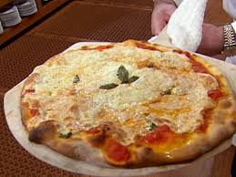

NY style Pizza Recipe

Ingredients
- 1 teaspoon active dry yeast
- 2/3 cup warm water (110 degrees F/45 C)
- 2 cups all-purpose flour
- 1 teaspoon salt
- 2 tablespoons olive oil
- 1 (10 ounce) can tomato sauce
- 1 pound shredded mozzarella cheese
- 1/2 cup grated Romano cheese
- 1/4 cup chopped fresh basil
- 1 tablespoon dried oregano
- 1 teaspoon red pepper flakes
- 2 tablespoons olive oil
Directions
-
- Yeast Sprinkle
- Sprinkle the yeast over the surface of the warm water in a large bowl. Let stand for 1 minute, then stir to dissolve. Mix in the flour, salt and olive oil. When the dough is too thick to stir, turn out onto a floured surface, and knead for 5 minutes. Knead in a little more flour if the dough is too sticky. Place into an oiled bowl, cover, and set aside in a warm place to rise until doubled in bulk.
-
- Heating up
- Preheat the oven to 475 degrees F (245 degrees C). If using a pizza stone, preheat it in the oven as well, setting it on the lowest shelf.
-
- Piece of Parchment
- When the dough has risen, flatten it out on a lightly floured surface. Roll or stretch out into a 12 inch circle, and place on a baking pan. If you are using a pizza stone, you may place it on a piece of parchment while preheating the stone in the oven.
-
- Flake it up
- Spread the tomato sauce evenly over the dough. Sprinkle with oregano, mozzarella cheese, basil, Romano cheese and red pepper flakes.
-
- Get baked, Get cool
- Bake for 12 to 15 minutes in the preheated oven, until the bottom of the crust is browned when you lift up the edge a little, and cheese is melted and bubbly. Cool for about 5 minutes before slicing and serving.